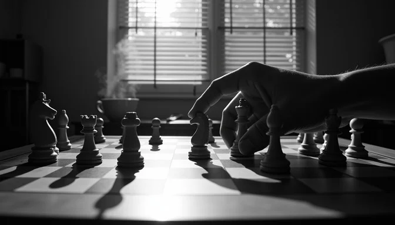
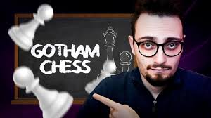
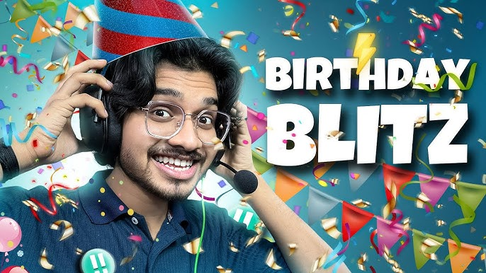
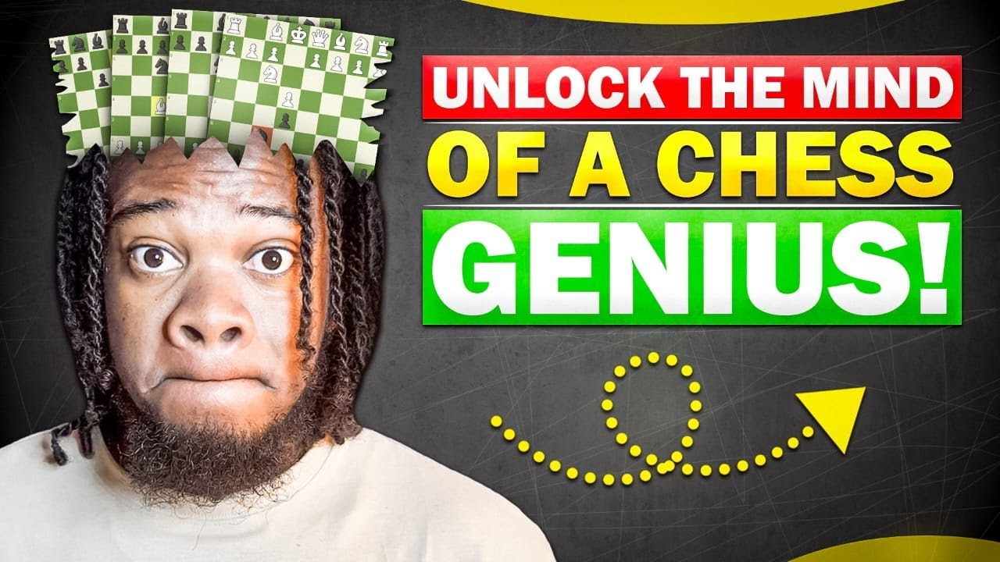

Learn Chess
Whether you are a beginner or an advanced player, here are some recommended resources and tips to improve your chess skills.

Learning Resources
Books
- "Bobby Fischer Teaches Chess" - Beginner-friendly guide to Tactics
- "My System" by Aron Nimzowitsch - Strategic concepts for Intermediate players
- "Chess Fundamentals" by Jose Capablanca - Classic book for understanding principles
Websites


YouTube Channels
- GothamChess A Kinda OG Channel by IM Levy Rozman (Beginner-friendly, Entertaining analysis)
- Professor Chess  A Hindi Channel by Indian Prodigy Yash (Lessons and strategy breakdowns)
- ChessScape An Anonymuous owned funny Channel (Game analysis and Opening tutorials)
- ChessWithAkeem  A Channel by CM Akeem Brown (Engaging lessons for all Levels - You can also get a chance to paly with him on CDC, I also played with him)
Chess Openings
For White
- Italian Game (1.e4 e5 2.Nf3 Nc6 3.Bc4)
- Ruy Lopez (1.e4 e5 2.Nf3 Nc6 3.Bb5)
- Queen's Gambit (1.d4 d5 2.c4)
For Black
- Sicilian Defense (1.e4 c5)
- French Defense (1.e4 e6)
- King's Indian Defense (1.d4 Nf6 2.c4 g6 3.Nc3 Bg7)
Tips for Improving
- Practice tactics regularly (puzzles help a lot).
- Analyze your games and learn from mistakes.
- Study classic games of champions like Fischer, Kasparov, and Carlsen.
- Focus on endgames - knowing them gives a huge advantage.